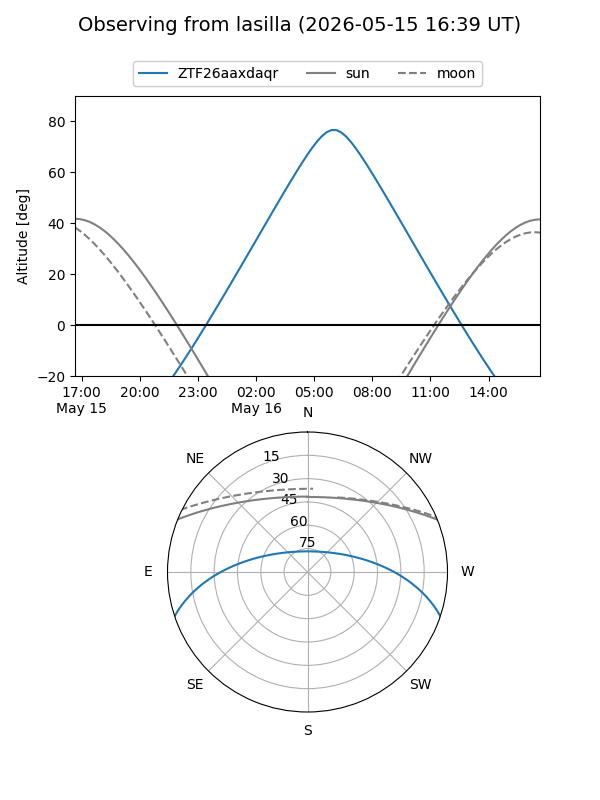
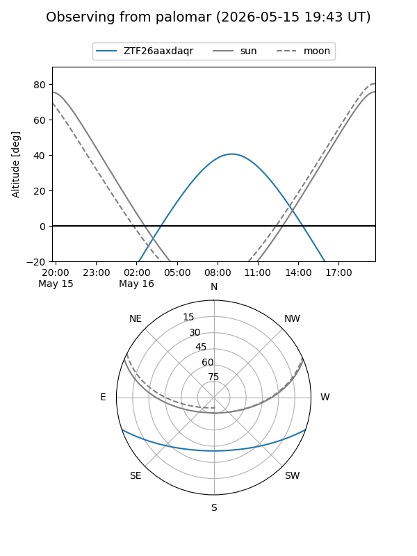

ZTF26aaxdaqr
Target ZTF26aaxdaqr at 2026-05-16 09:34
Aliases and brokers:
FINK: link
Lasair: link
ALeRCE: link
alt names
ZTF26aaxdaqr (ztf,fink_ztf)
Coordinates:
equatorial (ra, dec) = 253.0064,-15.93324
equatorial (HMS+DMS) = 16:52:01.53,-15:55:59.68
galactic (l, b) = (3.9167,+17.50695)
Flags:
Photometry:
last ztfg=19.60
1 ztfg detections
Lightcurve
Visibility


Additional plots